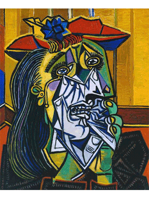

 Picasso was
born at 23:15 on 25 October 1881, in the city of Málaga, Andalusia, in
southern Spain. He was the first child of Don José Ruiz y Blasco
(1838–1913) and María Picasso y López. Picasso's family was of
middle-class background. His father was a painter who specialized in
naturalistic depictions of birds and other game. For most of his life,
Ruiz was a professor of art at the School of Crafts and a curator of a
local museum. Ruiz's ancestors were minor aristocrats. Picasso's birth
certificate and the record of his baptism include very long names,
combining those of various saints and relatives. Ruiz y Picasso were his
paternal and maternal surnames, respectively, per Spanish custom. The
surname "Picasso" comes from Liguria, a coastal region of north-western
Italy. Pablo's maternal great-grandfather, Tommaso Picasso, moved to Spain
around 1807. Picasso showed a passion and a skill for drawing from an
early age. According to his mother, his first words were "piz, piz", a
shortening of lápiz, the Spanish word for "pencil". From the age of seven,
Picasso received formal artistic training from his father in figure
drawing and oil painting. Ruiz was a traditional academic artist and
instructor, who believed that proper training required disciplined copying
of the masters, and drawing the human body from plaster casts and live
models. His son became preoccupied with art to the detriment of his
classwork. The family moved to A Coruña in 1891, where his father became a
professor at the School of Fine Arts. They stayed for almost four years.
On one occasion, the father found his son painting over his unfinished
sketch of a pigeon. Observing the precision of his son's technique, an
apocryphal story relates, Ruiz felt that the thirteen-year-old Picasso had
surpassed him, and vowed to give up painting, though paintings by him
exist from later years. In 1895, Picasso was traumatized when his
seven-year-old sister, Conchita, died of diphtheria. After her death, the
family moved to Barcelona, where Ruiz took a position at its School of
Fine Arts. Picasso thrived in the city, regarding it in times of sadness
or nostalgia as his true home. Ruiz persuaded the officials at the academy
to allow his son to take an entrance exam for the advanced class. This
process often took students a month, but Picasso completed it in a week,
and the jury admitted him, at just 13. As a student, Picasso lacked
discipline but made friendships that would affect him in later life. His
father rented a small room for him close to home so he could work alone,
yet he checked up on him numerous times a day, judging his drawings. The
two argued frequently. Picasso's father and uncle decided to send the
young artist to Madrid's Real Academia de Bellas Artes de San Fernando,
the country's foremost art school. At age 16, Picasso set off for the
first time on his own, but he disliked formal instruction and stopped
attending classes soon after enrollment. Madrid held many other
attractions. The Prado housed paintings by Diego Velázquez, Francisco
Goya, and Francisco Zurbarán. Picasso especially admired the works of El
Greco; elements such as his elongated limbs, arresting colours, and
mystical visages are echoed in Picasso's later work.
Picasso's output, especially in his early career, is often periodized.
While the names of many of his later periods are debated, the most
commonly accepted periods in his work are the Blue Period (1901–1904),
the Rose Period (1904–1906), the African-influenced Period (1907–1909),
Analytic Cubism (1909–1912), and Synthetic Cubism (1912–1919), also
referred to as the Crystal period. Much of Picasso's work of the late
1910s and early 1920s is in a neoclassical style, and his work in the
mid-1920s often has characteristics of Surrealism. His later work often
combines elements of his earlier styles.
Pablo Picasso
died on 8 April 1973 in Mougins, France, from pulmonary edema and a heart
attack, the morning after he and his wife Jacqueline entertained friends
for dinner. He was interred at the Château of Vauvenargues near
Aix-en-Provence, a property he had acquired in 1958 and occupied with
Jacqueline between 1959 and 1962. Jacqueline prevented his children Claude
and Paloma from attending the funeral. Devastated and lonely after the
death of Picasso, Jacqueline killed herself by gunshot in 1986 when she
was 59 years old.
Picasso's
influence was and remains immense and widely acknowledged by his admirers
and detractors alike. On the occasion of his 1939 retrospective at MoMA,
Life magazine wrote: "During the 25 years he has dominated modern European
art, his enemies say he has been a corrupting influence. With equal
violence, his friends say he is the greatest artist alive." Picasso was
the first artist to receive a special honour exhibition at the Grand
Gallery of the Louvre Museum in Paris in celebration of his 90 years. In
1998, Robert Hughes wrote of him: "To say that Pablo Picasso dominated
Western art in the 20th century is, by now, the merest commonplace. ... No
painter or sculptor, not even Michelangelo, had been as famous as this in
his own lifetime. ... Though Marcel Duchamp, that cunning old fox of
conceptual irony, has certainly had more influence on nominally vanguard
art over the past 30 years than Picasso, the Spaniard was the last great
beneficiary of the belief that the language of painting and sculpture
really mattered to people other than their devotees." Musée Picasso, Paris
(Hotel Salé, 1659) At the time of Picasso's death many of his paintings
were in his possession, as he had kept off the art market what he did not
need to sell. In addition, Picasso had a considerable collection of the
work of other famous artists, some his contemporaries, such as Henri
Matisse, with whom he had exchanged works. Since Picasso left no will, his
death duties (estate tax) to the French state were paid in the form of his
works and others from his collection. These works form the core of the
immense and representative collection of the Musée Picasso in Paris. In
2003, relatives of Picasso inaugurated a museum dedicated to him in his
birthplace, Málaga, Spain, the Museo Picasso Málaga. Museu Picasso is
located in the gothic palaces of Montcada street in Barcelona. The Museu
Picasso in Barcelona features many of his early works, created while he
was living in Spain, including many rarely seen works which reveal his
firm grounding in classical techniques. The museum also holds many precise
and detailed figure studies done in his youth under his father's tutelage,
as well as the extensive collection of Jaime Sabartés, his close friend
and personal secretary. Guernica was on display in New York's Museum of
Modern Art for many years. In 1981, it was returned to Spain and was on
exhibit at the Casón del Buen Retiro of the Museo del Prado. In 1992, the
painting was put on display in the Reina Sofía Museum when it opened.
Picasso Museum in Buitrago In 1985, a museum was established in Buitrago
del Lozoya by Picasso's friend Eugenio Arias Herranz. It was announced on
22 September 2020 that the project for a new Picasso Museum due to open in
Aix-en-Provence in 2021, in a former convent (Couvent des Prêcheurs),
which would have held the largest collection of his paintings of any
museum, had been scrapped due to the fact that Catherine Hutin-Blay,
Jacqueline Picasso's daughter, and the City Council had failed to reach an
agreement. In the 1996 movie Surviving Picasso, Picasso is portrayed by
actor Anthony Hopkins. Picasso is also a character in Steve Martin's 1993
play, Picasso at the Lapin Agile. In A Moveable Feast by Ernest Hemingway,
Hemingway tells Gertrude Stein that he would like to have some Picassos,
but cannot afford them. Later in the book, Hemingway mentions looking at
one of Picasso's paintings. He refers to it as Picasso's nude of the girl
with the basket of flowers, possibly related to Young Naked Girl with
Flower Basket. On 8 October 2010, Picasso: Masterpieces from the Musée
National Picasso, Paris, an exhibition of 150 paintings, sculptures,
drawings, prints and photographs from the Musée National Picasso in Paris,
opened at the Seattle Art Museum, Seattle, Washington, US. The exhibition
subsequently travelled to the Virginia Museum of Fine Arts, Richmond,
Virginia: the M.H. de Young Memorial Museum, San Francisco, California,
US.; the Art Gallery of New South Wales, Sydney, Australia; and the Art
Gallery of Ontario, Toronto, Ontario, Canada. As of 2015, Picasso remained
the top-ranked artist (based on sales of his works at auctions) according
to the Art Market Trends report. More of his paintings have been stolen
than any other artist's; in 2012, the Art Loss Register had 1,147 of his
works listed as stolen. The Picasso Administration functions as his
official Estate. The US copyright representative for the Picasso
Administration is the Artists Rights Society.
Loading...
Blue Period: 1901–1904
Rose Period: 1904–1906
African art and primitivism: 1907–1909
Synthetic cubism: 1912–1919
15 Pablo Picasso Fun Facts
1. Picasso's Full Name Has 23 Words
Picasso was baptized Pablo Diego José Francisco de Paula Juan Nepomuceno
María de los Remedios Cipriano de la Santísima Trinidad Martyr Patricio
Clito Ruíz y Picasso. He was named after various saints and relatives.
The "Picasso" is actually from his mother, Maria Picasso y Lopez. His
father is named Jose Ruiz Blasco.
2. Picasso's First Word: Pencil
It's like Picasso was born an artist: his first word was "piz," short of
lápiz the Spanish word for 'pencil.' His father Ruiz, an artist and art
professor, gave him a formal education in art starting from the age of
7. By 13, Ruiz vowed to give up painting as he felt that Pablo had
surpassed him.
3. Pablo's First Artworks
At the tender young age of 9, Picasso completed his first painting: Le
picador, a man riding a horse in a bullfight.
His first major painting, an "academic" work is First Communion,
featuring a portrait of his father, mother, and younger sister kneeling
before an altar. Picasso was 15 when he finished it.
4. When He Was Born, The Midwife Thought He Was Stillborn
Picasso had such a difficult birth and was such a weak baby that when he
was born, the midwife thought that he was stillborn so she left him on a
table to attend his mother. It was his uncle, a doctor named Don
Salvador, that saved him.
5. Picasso was a Terrible Student
No doubt about it, Picasso was brilliant: artistically, he was years
ahead of his classmates who were all five to six years older than him.
But Picasso chafed at being told what to do and he was often thrown into
"detention":
For being a bad student I was banished to the 'calaboose' - a bare
cell with whitewashed walls and a bench to sit on. I liked it there,
because I took along a sketch pad and drew incessantly ... I could
have stayed there forever drawing without stopping ”
- Pablo Picasso
6. Picasso's First Job
Picasso signed his first contract in Paris with art dealer Pere Menach,
who agreed to pay him 150 francs per month (about US$750 today).
7. Did Picasso Steal the Mona Lisa?
Actually no, but in 1911, when the famous painting Mona Lisa of Leonardo
da Vinci was stolen from the Louvre, the police took in Picasso's
friend, the poet Guillaume Apollinaire. Apollinaire fingered Picasso as
a suspect, so the police hauled him in for questioning. Both were later
released.
8. Cubism: Full of Little Cubes
In 1909, Picasso and French artist >Georges Braque co-founded an art
movement known as cubism. Actually, it was a French art critic Louis
Vauxcelles who first called it "bizarre cubiques" or cubism, after
noting that Picasso and Braque's paintings are "full of little cubes."
9. Picasso claimed "Paul Cézanne was my one and only master."
In 1943, Pablo Picasso declared to photographer George Brassaï that
artist Paul Cézanne was "my one and only master."
10. Guernica
When a Nazi officer saw Guernica he asked Picasso "Was you who did it?"
and Picasso is said to have responded, "No, you did!".
11. Picasso is a prolific artist
In all his life Picasso produced about 147,800 pieces, consisting of:
13,500 paintings, 100,000 prints and engravings, 300 sculptures and
ceramics and 34,000 illustrations - an impressive 78-year career.
12. Picasso's iconic striped shirt is no ordinary garment
Picasso's iconic shirt is a Breton-striped shirt, which in 1858 became
the official uniform for French seamen in Brittany. Picass was also a
leader in fashion, and his Breton striped t-shirt was designed by Coco
Chanel. The 21 horizontal stripes represent each of Napoleon's
victories.
13. Exhibition at the Louvre Museum
Picasso was the first artist to receive a special honour exhibition at
the Grand Gallery of the
Louvre Museum in Paris in
celebration of his 90 years.
14. Picasso was a poet and a playwright
After ending his first marriage in 1935, Picasso dabbled in poetry and
later wrote two surrealist plays. Between 1935 and 1959 Picasso wrote
over 300 poems that were mostly untitled except for an occasional date
and location of where it was written. It was rumoured that Picasso
predicted he'd be known more for his poetry than his paintings.
15. Where is Picasso buried?
Picasso was buried in the grounds of a château that he bought on a whim
in 1958 in the village of Vauvenargues in the south of France.
Small groups of visitors are now allowed to view his final resting
place, where he has lain since his death aged 91. The raised burial
mound is topped with his 1933 sculpture,
Femme au vase.
Picasso is said to have bought the estate after discovering that it lay
on the slopes of Mont Sainte-Victoire, which was painted more than 30
times by Paul Cézanne, the
Impressionist artist. "I have just bought myself Cézanne's mountains,"
he told his agent.